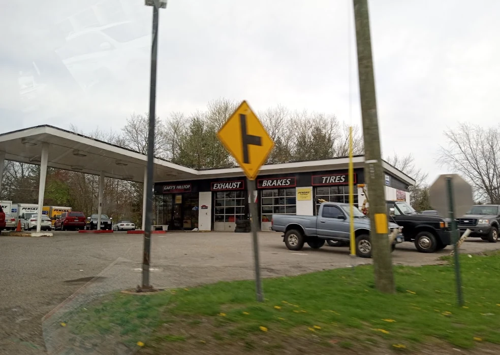

Diagnostics
Check-engine lights, electrical concerns and computer diagnostic testing.
Diagnostics, brakes, oil changes and routine maintenance. Call Gary’s Hilltop to discuss your vehicle and arrange a time to bring it in.
Routine service or a problem that needs attention. Call to discuss the work your vehicle needs.
Check-engine lights, electrical concerns and computer diagnostic testing.
Brake service and repairs, including pads and rotors.
Oil changes, coolant service and routine fluid maintenance.
Tire sales and service, suspension work and shock repairs.
Exhaust system repairs for leaks, wear and unwanted noise.
Batteries, belts, hoses, tune-ups and preventative maintenance.
Start with what you’ve noticed. Have a few details ready when you call to discuss diagnostic testing.
Note when the warning or problem first appeared.
Mention unusual sounds, smells or changes in how the car drives.
Starting, braking, turning or driving at a particular speed.
“No nonsense straightforward and affordable.”
“repair was done well and on time.”
“Excellent repair shop. Quality work and fair pricing.”
Selected excerpts. Rating checked September 13, 2026. Read all reviews.

The shop is on East Main Street in Torrington, near Harwinton.
Call ahead for weekend hours and appointment availability.
Have your year, make and model handy. The shop will confirm the work, timing and appointment availability by phone.
Use this to organize your vehicle details before calling. Nothing is sent to the shop, and no appointment is booked.
Use this when you call to arrange an appointment.